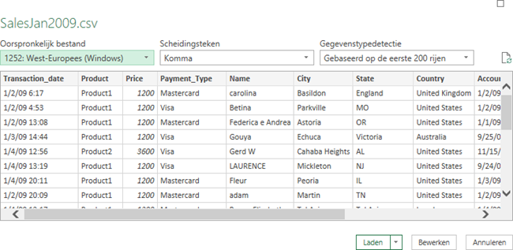

Taak: Importeer tekst/csv
Veel gegevens in externe bronnen zijn beschikbaar als tekst (bestandstype .txt) of via komma (of karakter) gescheiden waarden (bestandstype .csv).
- Open a nieuwe lege werkmap.
- Kies .
-
Blader naar het hulpbestand en klik Importeren.
Een voorbeeld van de gegevens wordt getoond.
Figuur 1. Voorbeeld van SalesJan2009 gegevens  -
Klik op Bewerken.
De Query Editor wordt gestart in een nieuw venster. Aan de rechterkant onder Queryinstellingen en onder Toegepaste Stappen zie je de stappen die reeds zijn toegepast.
-
Selecteer de kolommen Account_Created, Last_Login, Latitude,
Longitude) door op de kolomkop te klikken met ingedrukte CTRL
toets. Kies dan .
Als alternatief kun je de rechtermuisknop gebruiken en dan de gewenste actie uit het snelmenu kiezen.De kolommen worden verwijderd en de stap is toegevoegd aan Toegepaste Stappen.
In elke kolomkop zit aan de linkerkant een icon dat het toegepaste gegevenstype weergeeft. Wanneer je een kolom selecteert zie je het gegevenstype ook op het lint. En dit is tevens de plek waar je het gegevenstype kunt wijzigen.
Price heeft gegevenstype Geheel getal, alle andere kolommen hebben gegevenstype Tekst.
- Selecteer de eerste kolom Transaction_date en kies dan . Wanneer er een dialoogscherm komt of de bestaande conversie vervangen moet worden, kies dan voor vervangen van de huidige conversie.
In kolom Name beginnen de meeste namen met een hoofdletter, maar niet allemaal.
- Selecteer kolom Name, rechter muisklik en kies .
-
Kies .
De gegevens worden in een Excel tabel in een nieuw werkblad opgeslagen. Je kunt nu met de gegevens werken en de Excel map voor later gebruik opslaan.
Opmerking: Het is altijd mogelijk om de query achteraf te wijzigen. Selecteer hiervoor een cel in de tabel en kies . De Query Editor wordt weer opgestart. Van hieruit kun je tevens de gegevens vernieuwen, alle stappen worden dan herhaald.